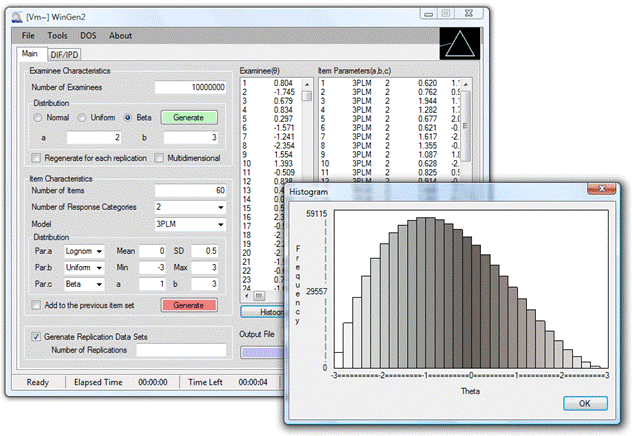

Windows Software that Generates IRT Parameters and Item Responses
Item response theory (IRT) is a popular and valuable framework for modeling educational and psychological test data, due to attractive properties such as the invariance of item and examinee parameter values and parameters being reported on a common scale. However, IRT models often rely on strict assumptions — unidimensionality and the mathematical form of the item characteristic functions — and violations of these assumptions can produce serious negative consequences. One way of evaluating the impact of violating these assumptions, as well as studying factors such as choice of models, sample sizes, ability distributions, and test length, is via Monte Carlo simulation studies.
WinGen was developed to generate dichotomous and polytomous item response data for several IRT models and for many conditions that arise in practice. It is more general and more user-friendly than many of the IRT simulation programs available today.
WinGen supports dichotomous IRT models with one, two, and three parameters; non-parametric models; polytomous IRT models such as the partial credit model, generalized partial credit model, graded response model, rating scale model, and nominal response model; and multidimensional compensatory models. Users can even have a mixture of more than one IRT model in a set of items.
WinGen can generate sets of item parameters and examinee ability parameters from various kinds of distributions. Users can choose a normal, uniform, or beta distribution for examinee parameters, and a normal, uniform, beta, or lognormal distribution for item parameters. WinGen provides histogram plotting of examinee ability parameters, and gives users substantial control over parameters by allowing user-specified parameter sets and/or SEED values.
By taking advantage of running on a Windows platform, WinGen provides a virtually point-and-click solution for simulating IRT data. There are three stages shown on a one-stop interface screen: generating/reading ability parameters, generating/reading item parameters, and simulating item response data. Once parameters are generated, WinGen immediately provides IRT plots such as ICC, TCC, IFC, and TIC.
Replication data can be simulated up to 1,000,000 sets, and syntax files for PARSCALE, BILOG-MG, and MULTILOG are automatically generated. Batch files can be generated for handling multiple calibrations. WinGen provides dialog input to introduce differential item functioning (DIF) or item parameter drift. With multiple file read-in, users can have multiple groups of examinees and multiple sets of items/tests. WinGen can also read output files from other IRT programs and automatically analyze DIF by computing RMSD, MAD, and BIAS.

WinGen provides an intuitive and user-friendly interface
WinGen supports a comprehensive range of IRT models for both dichotomous and polytomous data, as well as multidimensional models.
| Feature | DATAGEN | GENIRV | RESGEN | WINIRT | PARDSIM | WinGen |
|---|---|---|---|---|---|---|
| Authors | Hambleton & Rovinelli (1973) | Baker (1989) | Muraki (1992) | Fang & Johanson (2005) | Yoes (1997) | Han (2007) |
| Max Examinees | 4,000 | 4,000 | 1,000 | 4,000 | N/A | 100,000,000* |
| Max Items | 400 | 100 | 100 | 400 | N/A | 100,000,000* |
| OS | DOS | DOS | DOS | Windows | Windows (16,32bit) | Windows (32,64bit) |
* Limited only by available system resources
Requires Microsoft Windows with .NET Framework 2.0 or higher.